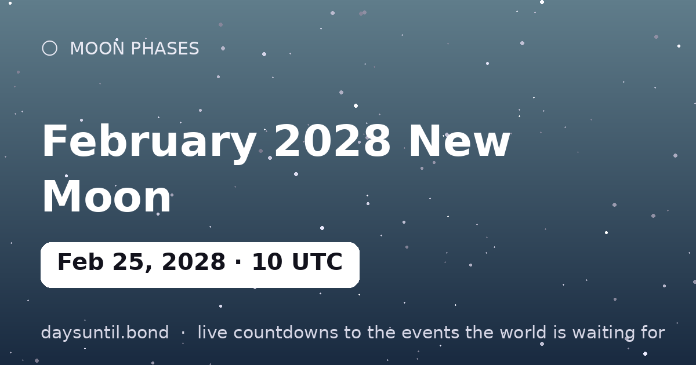

How Many Days Until February 2028 New Moon?
February 2028 New Moon falls on Friday, February 25, 2028.
As of October 24, 2026: 489 days to go — 69 weeks and 6 days, 350 weekdays (139 weekend days), about 11,736 hours.

Quick facts
| Exact (UTC) | February 25, 2028 · 10:39 |
|---|---|
| Zodiac position | 6°21' Pisces |
| Moon phase | New Moon (0% illumination) |
| Best viewing | Moonless night — ideal for stars, meteors and the Milky Way |
About February 2028 New Moon
The February 2028 new moon falls at 10:39 UTC on February 25, 2028, at 6°21' Pisces. The Moon sits between Earth and Sun, so its dark side faces us: no Moon visible for about a day on either side.
A new moon in Pisces is the traditional planting moment of the month — the sky's blank page. Anything begun in the days around it shares the sign's flavor, and the intentions you set now come to full light at the Pisces full moon six months later.
Your February 2028 New Moon countdown milestones
It is easier to plan against fixed points than against a number that moves. These are the dates on which the countdown to February 2028 New Moon passes each marker between now and the day itself — the last one falls on Thursday 24 February, when there will be 1 day left.
| Milestone | Day | Date | Remaining |
|---|---|---|---|
| 365 days | Thursday | 25 February 2027 | 365 days to go |
| 200 days | Monday | 09 August 2027 | 200 days to go |
| 100 days | Wednesday | 17 November 2027 | 100 days to go |
| 50 days | Thursday | 06 January 2028 | 50 days to go |
| 30 days | Wednesday | 26 January 2028 | 30 days to go |
| 14 days | Friday | 11 February 2028 | 14 days to go |
| 7 days | Friday | 18 February 2028 | 7 days to go |
| 3 days | Tuesday | 22 February 2028 | 3 days to go |
| 1 days | Thursday | 24 February 2028 | 1 day to go |
How the remaining time breaks down
489 days is the headline, but it is rarely the number that helps. 350 of those are weekdays and 139 fall on a weekend, which is the split that matters if you are planning around work. It is 69 weeks and 6 days, or roughly 16.1 months, or about 11,736 hours.
| Unit | Until February 2028 New Moon |
|---|---|
| Days | 489 |
| Weeks | 69 weeks and 6 days |
| Months (approx) | 16.1 |
| Weekdays | 350 |
| Weekend days | 139 |
| Hours | 11,736 |
| Sleeps | 489 |
Working days are Monday to Friday and do not subtract public holidays, which vary by country and employer — the full month-by-month split is on our weekday page for February 2028 New Moon.